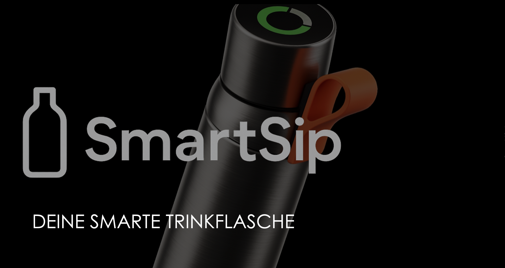

Eine smarte Trinkflasche mit App, die den Wasserhaushalt im Blick behält.
SmartSip entstand als Semesterprojekt im Fach UX Design (Gruppe 3). Die Flasche erfasst, wie viel du trinkst, und ist über eine App mit dem Fitnesstracker verbunden. Der individuelle Tagesbedarf wird aus Körpermaßen und Aktivität berechnet. Der Füllstand wird per Schwimmer gemessen; andere Flüssigkeiten und Supplements lassen sich manuell eintragen.
Die smarte Flasche soll als unauffälliger Alltagsbegleiter an das Trinken erinnern und den individuellen Wasserbedarf im Blick behalten. Zwei Personas zeigen, wie unterschiedlich die Anforderungen sein können.
Ruhige Blau- und Petroltöne vermitteln Frische und Klarheit. Als Schrift kommt eine serifenlose Typografie zum Einsatz (Titel 24–32 px semibold, Fließtext 14–16 px).